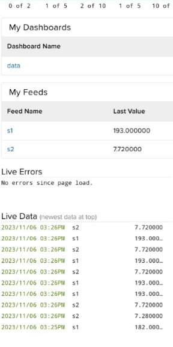

Smart Pedometer |
In an era characterized by growing health consciousness, the "Smart Pedometer" mini project offers a fresh perspective on fitness tracking and physical activity monitoring. This compact, wearable device goes beyond traditional step counting, incorporating state-of-the-art features to enhance accuracy, user-friendliness, and energy efficiency. Its essential components consist of an accelerometer, microcontroller, timer circuit, user interface, and LED indicator. The pedometer continuously monitors the user's movements through the accelerometer, updating the step count when motion is detected. However, the standout feature is the "Smart Pause" mechanism, which deploys a timer circuit to pause step counting when the accelerometer registers prolonged inactivity, preventing any stationary or insignificant motions from being erroneously counted as steps. An LED indicator offers immediate visual feedback, alerting users when step counting is temporarily paused. Prioritizing user-friendliness, the device incorporates a push-button switch, empowering users to manually enable or disable the "Smart Pause" feature, making it effortless to interrupt step counting during anticipated short periods of inactivity. Step counting swiftly resumes upon detecting motion, and the LED indicator deactivates. The key benefits of the "Smart Pedometer" encompass improved accuracy, user-friendly operation, and energy conservation. This intelligent, compact device is poised to inspire individuals to lead more active and healthier lives while simplifying their physical activity tracking, thereby contributing to their overall well-being. |